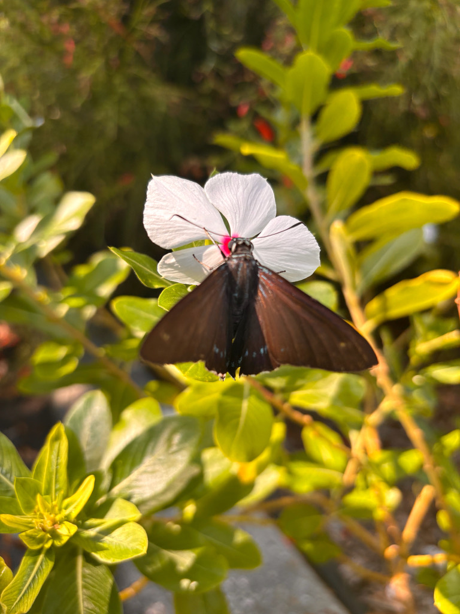

- The mangrove skipper is a large, fast-flying butterfly — mostly dark blackish-brown, but lit up with streaks of electric, almost neon, blue.
- Its life is tied to a single plant: the caterpillars feed only on red mangrove, so the butterfly lives only where mangroves grow along warm, salty coasts.
- Florida has its own form of this butterfly, and the Bradenton area sits near the northern edge of its Gulf Coast range.
- The caterpillar is a tidy little engineer, folding and silking a red mangrove leaf into a shelter to live and feed inside.
Large for a skipper, dull blackish-brown, with bold electric-blue streaks.
Dark with a white face and blue markings.
Fast and powerful; often perches under leaves.
Silent, like all butterflies.
A big, dark, fast butterfly near mangroves or flowers, flashing surprising streaks of bright blue. Those neon-blue marks on an otherwise dark butterfly are the giveaway — no other Florida skipper looks like it.
Caterpillars eat only red mangrove leaves. Adults sip nectar from a range of flowers, including mangrove blossoms, Spanish needles, citrus, and bougainvillea.
Near any mangrove or coastal plantings and at nectar-rich flowers on warm days. A localized find, since the butterfly stays close to its mangrove host.
Present in southern Florida year-round; here, near its northern Gulf limit, it is a more localized and seasonal find tied to warm weather and mangroves.
Just watch and enjoy. Avoid handling butterflies, whose wings are delicate, and remember that mangroves themselves are legally protected in Florida.


- © Lilah Thomas (CC-BY-NC), via iNaturalist
- © catalaniclaire (CC-BY-NC), via iNaturalist
- © Rhonda Olschefskie (CC-BY-NC), via iNaturalist